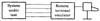
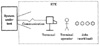
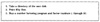

| Previous | Table of Contents | Next |
The above list includes only those mistakes that an analyst may make inadvertently due to inexperience. The benchmarking tricks that have been used by experienced analysts to show the superiority of their systems are discussed in the next section.
Benchmarking is the process of comparing two systems using standard well-known benchmarks. The process is not always carried out fairly. Some of the ways that the results of a benchmarking study may be misleading or biased are discussed next.
In order to measure the performance of a computer system, it is necessary to have some means of putting loads on the system. Although our interest in load drivers here is purely for performance measurement, it must be pointed out that the same load drivers can also be used for other purposes, such as the following:

FIGURE 9.2 An RTE and a SUT.
Three techniques that have been used for load driving are using internal drivers, live operators, or remote-terminal emulators.
The internal-driver method consists of loading programs directly into the memory and executing. If there is more than one program per user, then the whole sequence of commands is put in a disk file and run as a batch job. The main problem with the internal-driver method is that the effect of the terminal communication overhead is not visible. Also, the loading overhead may affect the system performance.
One way to account for terminal communication overhead is to have live operators utilize the system. To test a multiuser system, many people would need to sit down at their own terminal and execute a predetermined set of commands. This is a costly process and one that is difficult to control. The presence of the human element in the measurement increases the variance of the result. The increased variance means more trials are required to obtain a desired level of confidence.
The most desirable and popular method for putting the load on the system is to make use of computers. One computer can generally simulate many users in a very controlled and repeatable fashion. These computers are called Remote-Terminal Emulators (RTEs) (see Figure 9.2). The remainder of this chapter discusses the design and use of RTEs.
An RTE emulates the terminals, the terminal communication equipments, the operators, and the requests to be submitted to the System Under Test (SUT), as shown in Figure 9.3. In general, the RTE is a full-fledged computer that includes disks, magtapes, and at least one console terminal. In many cases, the RTE may be more powerful than the SUT. For example, super-minicomputers may be used to drive minicomputers and workstations. Most RTEs have their own operating system designed specifically for this real-time operation.

FIGURE 9.3 Compenents emulated by an RTE

FIGURE 9.4 Sample scenario.
The RTE sends commands to the SUT at appropriate intervals. The user commands are read from a disk file called script. The script file contains user commands as well as other instructions for the RTE, such as when the RTE should send out a command.
Scripts written for one RTE system cannot be used on another RTE system because they may include an incompatible set of commands. For the same reason, scripts that are written for one SUT cannot be used on another SUT. To compare two incompatible SLITS, the workload should be first described in a manner independent of the SUT and RTE. This description is called a scenario. An example of a scenario is shown in Figure 9.4.
| Previous | Table of Contents | Next |
){kind=link}
){kind=link}
){kind=link}
){kind=link}
){kind=link}
){kind=link}